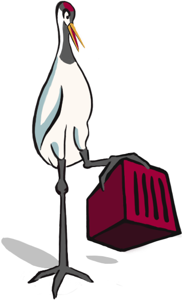

Habour Crane
Manage Apps with Docker
Manage easily Apps with Docker
As a web developer, I do not want to manage the applications on my server. I do not always control the techie, always problems with libraries sharing...
Fortunately, the container system has arrived and with it a number of solutions have emerged as Core Os, Docker ... Since that day, manage apps on its server is much simpler. But it still lacks an overlay to facilitate the deployment of web applications through an interface without typing command lines.
And it is here that Habour Crane's interesting.
Docker
Build, Ship, and Run Any App, Anywhere
The big blue whale
 We will not hide the fact, Docker was revolutionized the world
of containers.
And to help it, Harbour Crane offers application-oriented vision and fewer management of images or volumes.
We will not hide the fact, Docker was revolutionized the world
of containers.
And to help it, Harbour Crane offers application-oriented vision and fewer management of images or volumes.
The app uses Docker and Docker-Compose. Harbour Crane is used through a container. No installation, no problem library or security.
Interface
Web Interface for manage Apps
Apps, Images, Volumes can be managed by Habour Crane interface.
Start, Pause, Stop
With Harbour Crane, you can manage your applications with a file system contruction made through a form. Once the application created in the software, you can manage its start, its stopped or its paused. If the server were to restart, Harbour Crane would run automatically each container according to its previous state.
Databases shared
Databases can be shared and can be used when creating an application.
Proxy
A proxy is present and configured to manage all containers running on the server.
And After
Futurs developments
An Open Source Software.
Store
An application store will be present with the installation of apps in one click.
Updates
Alerts will manage to prevent the server administrator that docker repository of images will be to updated.
Technology: Docker / Ruby on Rails / Javascript (Coffescript) / HTML and CSS (SASS)